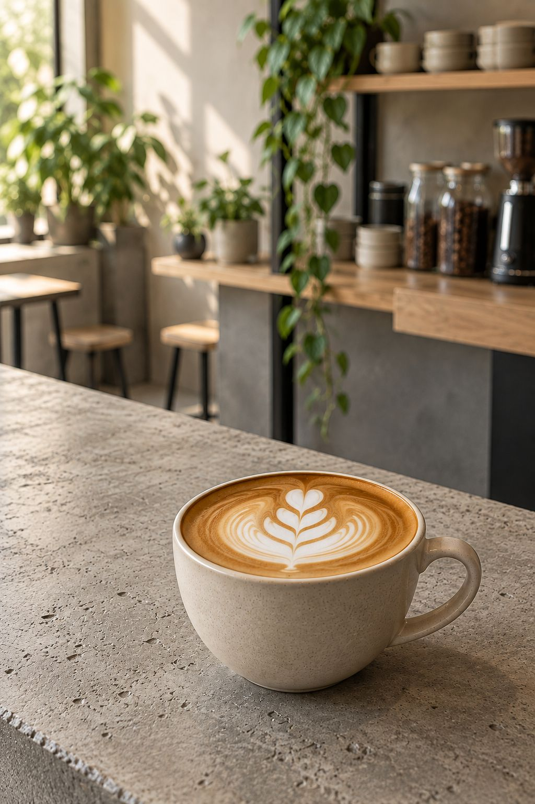
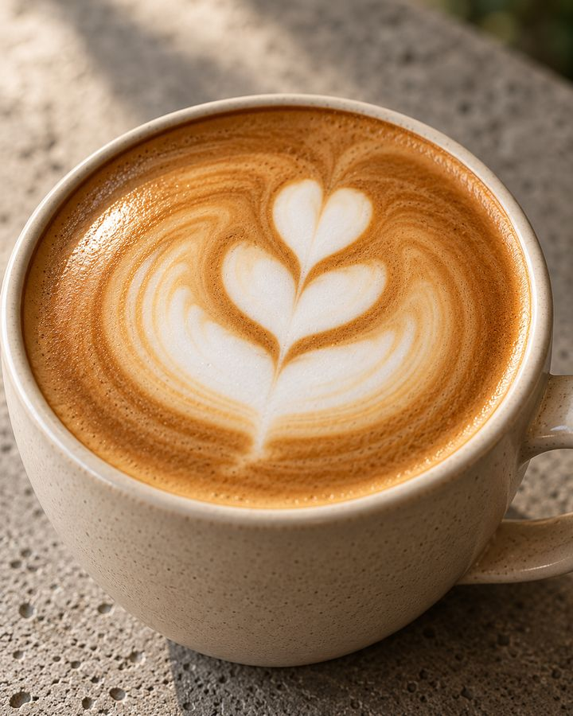
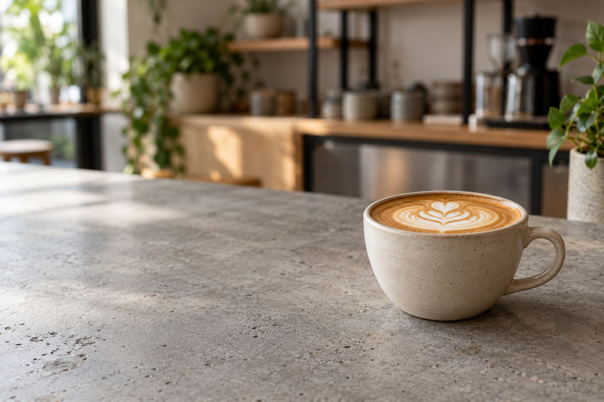
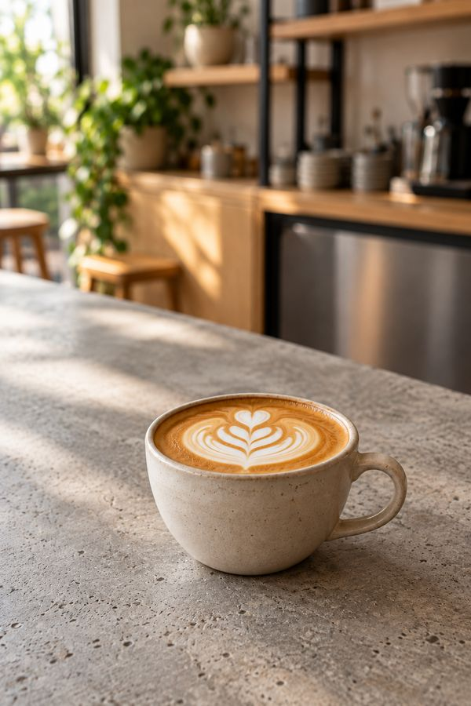

00 / BASE
Espresso
はじまりは、エスプレッソ1杯
エスプレッソ
ここから先の5杯は、どれもこの1杯に何を合わせるかの違いです。スクロールで、グラスの中身が変わります。

Specialty coffee ／ 市川市 高石神
下総中山駅から歩いて数分、
高架沿いのコーヒースタンド。
About
口コミで何度も名前が挙がるのは、本格的なフラットホワイト。エスプレッソのコクはそのままに、ミルクでやわらかく仕上げた一杯です。席は多くありませんが、海外のカフェのようなラフな空気と、話しやすい店主さんの人柄に惹かれて通う人が多いお店です。
00 / BASE
はじまりは、エスプレッソ1杯
ここから先の5杯は、どれもこの1杯に何を合わせるかの違いです。スクロールで、グラスの中身が変わります。
01 / HOT
フラットホワイト
オーストラリアやニュージーランド生まれ。ラテに似ていますが、エスプレッソのコクがしっかり残ります。
「本格的」「ここでしか飲めない」の声02 / ICED
アイスロングブラック
水の上にエスプレッソを注ぐ、すっきりしたブラック。持ち帰りで頼む人も。
「テイクアウトで頼んでおいしかった」の声03 / ICED
エスプレッソトニック
シュワっとしたトニックに、エスプレッソを重ねた一杯。苦みと爽やかさが同時に来ます。
お店のおすすめとして口コミに登場04 / ICED
アイスエスプレッソチャイラテ
スパイスのきいたチャイラテに、エスプレッソを合わせた一杯。チャイ好きにも。
「初めて出会った味」の声05 / ICED
アイスラテ
ミルクとエスプレッソの定番。ドーナツと一緒に頼む人が多い一杯です。
「アイスコーヒーもめっちゃおいしい」の声※口コミで名前が挙がった飲み物です。図は一般的な作り方のイメージで、お店のレシピ・メニュー名・値段に差し替えます。
Donut
口コミでコーヒーと並んで名前が挙がるのが、砂糖をまとったドーナツ。「ふわふわ」「コーヒーに合う」という声が多く、店内で食べるなら温めてもらうとさらにふわっとする、というひと言も。
ボタンを押すと、温めた時のイメージに変わります。
How to enjoy
口コミに出てくる3つの過ごし方
席は多くありませんが、海外のカフェのような空気でほっとできる、という声。席数は 実際の数を入れます
近所の人がコーヒーとドーナツを持ち帰り、「ご褒美にしたい」と書いた口コミも。
お店の外に席が並び、晴れた日はそこでラテを、という楽しみ方も口コミに。
Gallery
写真はイメージです。お店の写真に差し替えます。

FLAT WHITE
COUNTER
ANYTIMEVisit
営業日・時間はGoogleマップの情報（2026年10月）
最新の営業日・時間は、お店の Instagram でご確認ください。臨時のお休みも Instagram でお知らせします。
Q&A
エスプレッソに、きめの細かいミルクを合わせた飲み物です。ラテより濃く、エスプレッソのコクを感じやすいのが特徴です。
できます。口コミでも、アイスロングブラックやドーナツを持ち帰った声があります。
店内は小さめで、席は多くありません。天気のいい日は外の席もあります。席数と、混みやすい時間を入れます。
1日に用意する数や、売り切れのお知らせ方法を、お店のやり方に合わせて書きます。
使える支払い方法を、実際の内容に合わせて書きます。